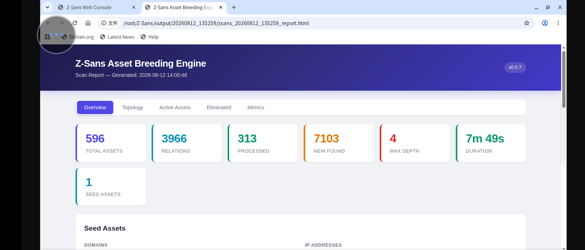

Each time a scan completes, Z-Sans creates a timestamped project directory inside the output directory, containing the complete asset graph and an interactive report.
Directory Structure¶
output/ # Root directory (configured by output.dir / -o)
└── 20260812_231800/ # Timestamped subdirectory YYYYMMDD_HHMMSS
├── zsans_20260812_231800.json # Complete asset graph
├── zsans_20260812_231800_assets.csv # Asset table
├── zsans_20260812_231800_relations.csv # Relation table
├── zsans_20260812_231800.graphml # GraphML topology
└── zsans_20260812_231800_report.html # Interactive HTML report
- Prefix: default
zsans, controlled by theoutput.output_prefixconfiguration - Timestamp:
%Y%m%d_%H%M%S(local time) - Directory creation timing: pre-created and cached when the engine
start()is called; plugin artifacts are written to the same directory, accessible viaengine.output_handler.run_dir
File generation is controlled by the output.formats switches (html maps to the internal report type report).
JSON Asset Graph¶
{prefix}_{timestamp}.json — a machine-readable format of the full asset graph; it is the data source for the Web console and project comparison.
{
"schema_version": 2,
"zs_version": "0.0.7",
"stats": { "nodes": 120, "edges": 310 },
"metrics": {
"assets_processed": 120,
"new_assets_found": 115,
"depth_reached": 4,
"errors": 0
},
"seeds": { "domains": ["example.com"], "ips": [], "ip_ranges": [] },
"config_hash": "<sha256 of config>",
"generated_at": "2026-08-12T23:18:00",
"nodes": [
{
"uid": "domain:example.com",
"type": "domain",
"value": "example.com",
"source": "manual",
"depth": 0,
"state": "scanned",
"properties": { "domain": "example.com" }
}
],
"edges": [
{ "source": "domain:example.com", "target": "ip:93.184.216.34", "relation": "resolved" }
]
}
CSV Asset Table¶
{prefix}_{timestamp}_assets.csv — includes BOM (UTF-8-sig), so Excel opens it directly without garbled characters.
| Column | Description |
|---|---|
| ID | Asset unique identifier type:value |
| Type | domain / ip / url / port / js / cert |
| Value | Asset value |
| Depth | Discovery depth |
| Discovery Time | Discovery time %Y-%m-%d %H:%M:%S |
| State | new / scanning / scanned / eliminated / failed / excluded |
| Title/Note | url assets take the title (truncated by max_length); port assets take the service name |
| Fingerprints | Comma-joined fingerprint list for url assets |
| CMS | CMS identified by fingerprinting |
| Server | Server-side information |
CSV Relation Table¶
{prefix}_{timestamp}_relations.csv — 3 columns:
| Column | Description |
|---|---|
| Source Asset ID | Source asset value (UID prefix stripped) |
| Target Asset ID | Target asset value |
| Relation Type | discovered / resolved / hosted |
GraphML Topology¶
{prefix}_{timestamp}.graphml — a standard GraphML 1.0 directed graph, visualizable with Gephi, Cytoscape, etc.
- Node id: asset UID (
type:value) - Node attribute keys:
type,value,depth,discovery_time,state, plus url-asset-specifictitle,fingerprints,cms,server - Edge attribute key:
relation
HTML Report (recommended for viewing)¶
{prefix}_{timestamp}_report.html — a self-contained interactive report (inline JS/CSS, no internet required), works right after opening.
Overview Tab¶
- Statistics cards: total assets, total relations, processed, newly discovered, max depth, elapsed time, seed count
- Seed asset list (domains + IPs)
- Top Hosts: top 15 by descending degree
- Asset type distribution: horizontal bar chart + donut chart
Topology Tab¶
- Native Canvas force-directed topology graph (no third-party graph library)
- When nodes > 300, truncated to 300 by degree
- Nodes colored by type, radius grows with degree, labels shown when zoom > 1.6
- Drag to pan, wheel / pinch zoom (0.05~8x), auto fit
Active Assets Tab¶
Asset table (Type/Value/Depth/Discovery Time/State/Title-Note/Fingerprints/CMS/Server) + live filtering.
Excluded Assets Tab¶
Table of excluded assets + reasons; requires output.keep_eliminated_assets: true (on by default) to have data.
Metrics Tab¶
- Full
engine.metricskey-value pairs - Port distribution (service / count)
- Exclusion reason statistics (reason / count)
Filtering and Search¶
- Search box: case-insensitive substring match on the whole row text
- Three dropdown filters: Type, State, Depth
- Live-updating count:
Showing N assets (filtered)
The report language follows the i18n configuration (zh prefix → lang="zh-CN").
Sample HTML Report¶

Checkpoint File¶
<output_dir>/checkpoint.json (default location) is used for resumable scanning:
- Save triggers: every
checkpoint.interval(default 50) processed assets, and onstop() - Atomic write: first write
.tmp→flush+fsync→os.replace, to prevent corruption on interruption - Contents: seeds, metrics, all nodes, edge triples, pending queue